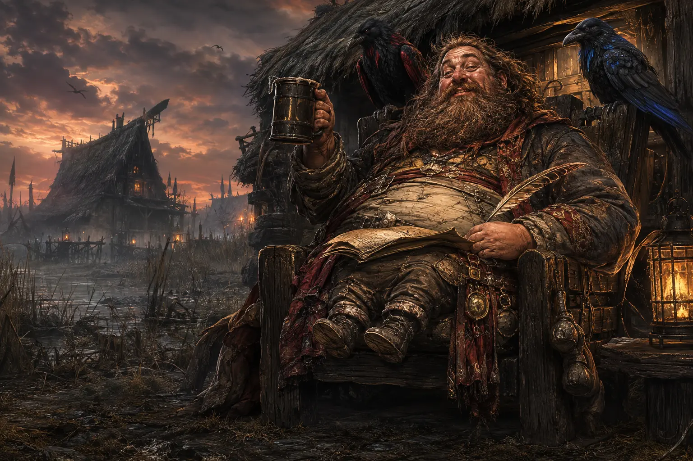
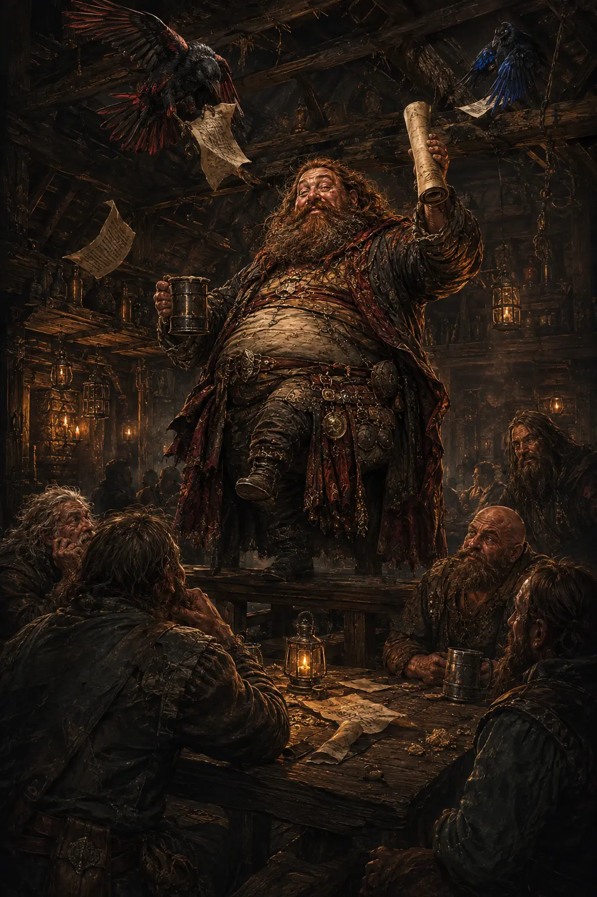

Opening Threshold
Ode of the Braid Who Loved in Many Tongues
The leading bridge into a book where love speaks through romance, friendship, family, sign, scent, feather, fur and flame.
Opening Book XVI
The Skald-Room
Love-odes, beast verses, work songs, epitaphs, prayer-leaves, witness fragments and the words Vardrum refuses to forget.
“Not all who witness speak with human tongues.”

Songs Beneath the Story
Poetry in Black Wings is record, warning, grief, humour, romance, folklore and living law. Some pieces are sung inside the books. Some stand at chapter thresholds. Others belong to the wider archive of Witness Isle and the Salt-Marsh.
The longer public pieces below sit inside tap-to-open panels. This keeps the page gentle to navigate while preserving the full poems and songs.
The newest cycle is different. Ten illuminated scrolls form one road through shelter, restraint, care, language, difference, refusal, memory, witness, identity and mystery. Choose any seal to begin.
The Book XVI shelf names approved canonical odes without exposing their full manuscript text or exact story events. The complete public works remain available farther down the page.
A New Website Cycle · Ten Complete Odes
From the first refuge to the road that answers twice: ten full public works carried through the laws, wounds, humour and living witness of the Braid.
Website Ode 1 of 10
For Crow Hearth, the first Braid knot, and every refuge that refused to become another cage
Website Ode 2 of 10
For Skuldrend, and for the hand that would not let protection feed upon terror
Website Ode 3 of 10
For Hearth-Soothe, Elland's fearful wisdom, Eldwyn's keeping hands, and every calm that preserved the right to choose
Website Ode 4 of 10
For Taff of Winchmore, the Salt-Raven, and the language that carried choice where spoken words were hunted
Website Ode 5 of 10
For Fenwake, the crooked song, and every peace that survived the return of honest difference
Website Ode 6 of 10
For Edda, Evin, Lysa, Oris, No Name Yet, and the First Board of No
Website Ode 7 of 10
For the child before Raven, the lowest stone, and every truth allowed to keep its lid
Website Ode 8 of 10
For Tova Flour-Hand, the lower storehouses, and the uprising that arrived carrying spoons
Website Ode 9 of 10
For Jack, once named Hrók-Mýr, whose ancestry was witness and never a leash
Website Ode 10 of 10
For Gracey, Deynn and Lóra Forren, who never needed a grand name to know when a road was lying

The Bard at the Twelfth Pint
The Rotund Short-Legged Bard of Palmers Green
Scholar. Drunkard. Profane philosopher. Enemy of silence and defender of the completely unnecessary opinion.
“History is written by the victors. Unfortunately, I was in the pub.”

Brains First · Disorder Second
Salmon notices pomposity before most people have finished creating it. The ale amplifies him; it never replaces the scholar beneath the beard, booming objections and heroic relationship with a tankard.
Those closest to him possess an ancient survival technique: “Yes, Salmon.”
As sung by Salmon Two-Arses, Twelve-Pints-Short, Legged Bard of Palmers Green, shortly before he passed out after twelve pints and the perilous three-yard pilgrimage to the karsi. He woke upon the throne three days later, stuck fast to the seat.
The Canon Shelf
These are part of Book XVI: The Braid, Part II. Their titles and roles may be known. Their full manuscript placement remains guarded.
Opening Threshold
The leading bridge into a book where love speaks through romance, friendship, family, sign, scent, feather, fur and flame.
Opening Book XVI
Bruhald Scarweary
A rowdier threshold telling, attributed to Bruhald after three cups of mercy, two cups of regret and one crow stealing his supper.
Opening companion ode
Endurance Ode
FATAS, invisible wars, repeated rising, the animal witnesses and Ness walking beside rather than behind.
Book XVI manuscript canon
Animal Witness Ode
Scarlet, Blue, Mad, Benson, Hugo, Shane, Mylo, Jack, Dusk and Bella’s Flame remembered as part of the Braid itself.
After reunion or shared hardship
Principal Ness Ode
Ness as the quiet living force who steadies and reconnects the family without becoming owner, crown or command.
Later third of Book XVI
Inter-Chapter I
A hearth measured by who is welcomed, fed and allowed to remain entirely themselves.
Book XVI inter-chapter canon
Inter-Chapter II
Scarlet and Blue as bonded witnesses, one carrying sharp laughter and the other high silence.
Book XVI inter-chapter canon
Inter-Chapter III
Salt-Marsh memory carried through ordinary material after official records have failed.
Book XVI inter-chapter canon
Later Mythic Archive
A larger and more legendary beast-ode reserved for the distant road after Book XVI.
Held for Books XVIII to XX
From the Green Deer-Wood Notebooks
Bremner Redbonce is an exploratory figure who has not yet entered the manuscript. This ode is preserved here as a possible Green Deer-Wood legend while his final place, history and chronology remain open.
Provisional archive status: the ode is public, but Bremner is not yet locked into book canon.
Before the first hearth found fire,
before the first king found a throne,
before ravens learned that a man’s silence
could weigh more than his sword,
there wandered one called Bremner Redbonce.
No crown sought him.
No temple chained him.
No banner claimed him.
The forests simply leaned closer
whenever he passed.
The rivers altered their songs
so that they might remember his footsteps.
Even mountains,
those proud old beasts of stone,
lowered their voices.
For Bremner Redbonce did not command the world.
He listened to it.
He learned the language
of snow before it became water.
He knew the thousand names
of rain before clouds had chosen
which valley to bless.
He could hear roots speaking
beneath frozen earth,
could hear wolves deciding mercy,
could hear ravens laughing
at the foolish certainty of men.
And when he answered,
he answered quietly.
For the oldest wisdom
never needed to shout.
Many sought to make him king.
He refused.
Many begged him to become a god.
He laughed.
“I have seen enough gods,”
he said.
“They spend far too much time
telling rivers where they ought to flow.”
So he became something rarer.
A companion.
To beasts.
To wanderers.
To widows.
To children who feared the dark.
To old warriors who feared
the daylight after battle.
He carried no judgement
that was not first weighed
against kindness.
The ravens found him first.
Blue landed upon his shoulder
without invitation.
Scarlet remained upon the branch above,
judging the arrangement.
Blue declared,
“He smells like rain.”
Scarlet answered,
“He smells like promises
that might actually be kept.”
Thus both remained.
Which, among ravens,
is considered extravagant praise.
The wolves walked beside him.
The bears shared winter caves.
The deer ceased fleeing
when his shadow crossed theirs.
Even foxes,
those cheerful thieves
who believe ownership
is merely a suggestion,
returned what they had stolen.
Mostly.
It is said that Bremner Redbonce carried
no sword of famous name.
Instead,
he carried an empty hand.
When hatred arrived,
it found no grip.
When pride arrived,
it found no mirror.
When despair arrived,
it discovered a fire
already waiting.
Thus many battles
ended before steel
ever left its sheath.
There came a winter
that wished to become eternal.
Trees cracked.
Rivers slept beneath armour of ice.
Birdsong vanished.
Even hope grew tired.
Bremner Redbonce climbed the highest ridge.
He spoke no spell.
He sang no enchantment.
He merely remembered
every spring
that had ever come before.
The earth remembered with him.
Snow began to melt.
Not because winter had been defeated,
but because memory
proved stronger than forgetting.
The old ones say
that when the Braid was still
only an idea
waiting for brave hearts,
it was Bremner Redbonce
who first whispered
into the listening wind,
“Make room.
Do not build walls.
Build welcome.”
The wind carried those words
far beyond his lifetime.
Some still hear them.
Most simply call them home.
Not every hero
must conquer.
Not every guardian
must command.
Some simply remain.
Some simply listen.
Some become the place
where frightened hearts
remember they are no longer alone.
When at last
his own road ended,
no monument was raised.
No fortress bore his name.
The wind required none.
The forests remembered.
The rivers continued speaking.
The ravens still searched
for travellers
whose hearts sounded
a little like his.
And sometimes,
when the fire burns low,
and the night becomes wonderfully quiet,
one may hear leaves
moving though there is no breeze.
The old folk smile then.
They never ask
whether Bremner Redbonce has returned.
They merely set another place
beside the fire.
For some guests
never truly leave.
∎

Salt-Marsh Work Song
A harvest song for reed-cutters, mat-makers, shoemakers, children, grandmothers, gull-watchers and all who know ordinary labour may carry old magic in its rhythm.
Best sung in a steady walking beat: one cut, one lift, one bind, one carry.
Written by Timothy M. Halliday.
Full Public Works
Every poem and song from the existing public Skald-Room has been preserved below. Tap the same title again to close it.
Copied from the reed-bound household leaves of the Salt-Marches, where black wings are fed before winter, spoken to before journeys, and never called mere omen by anyone with sense enough to keep a roof.
O black-feathered keepers of the wind,
you who write the sky with your wings,
carry the whispers of the earth
to the far edges of the dawn.
Guardians of shadow and silver light,
your eyes hold the memory of storms,
the glint of hidden rivers,
the truth that outlives the telling.
May your flight be unbroken,
your hunger always met by the generous field,
your nests cradled in branches
that sway but never break.
Teach us the patience of your watch,
the courage of your descent,
the wisdom to find beauty
in what others cast aside.
And when the night folds over the hills,
let your voices rise like dark bells,
calling us home
to the mystery we have forgotten.
Black-winged watchers of the fading light,
circle the sky where the sun bows low.
Carry the day’s last breath to the stars,
and guard the dreams that the sleepers sow.
Feathers of night, eyes of ember-glow,
keep the path between worlds in sight.
Return at dawn with the truth you know,
and rest in the arms of the sheltering night.
In Vardrum, these prayers were not always said in temples. More often they were spoken at doorways, beside eel-nets, over salt-barrels, at marsh funerals, before a child’s first winter walk, or when ravens gathered on the low black posts before weather changed.
The old ones said ravens carried memory upward, and crows carried warning sideways.
Neither bird belonged to death alone.
They belonged to witness.
They belonged to what survived being thrown away.
They belonged to the black grammar of the sky.
A Salt-Marsh work song for reed-cutters, mat-makers, shoemakers, children, grandmothers, gull-watchers and all who know that ordinary labour can carry old magic in its rhythm.
Best sung in a steady walking beat: one cut, one lift, one bind, one carry.
Sing softly now, O hearth and hall,
of love that would not bow,
of hands that held through storm and night,
and still are holding now.
Sing Ness, whose heart kept lanterns lit
when winter filled the door,
who gave her love not loud, but deep,
like roots beneath the floor.
She stood where broken voices shook,
where grief had left its scar,
and still she made a home of warmth
beneath each wounded star.
Sing Lucy, fierce with mother-light,
with sorrow in her flame,
who carried love through days no heart
should ever have to name.
She knew the ache of empty rooms,
the silence after prayer,
yet still her love rose every dawn
and filled the breathing air.
Sing Jesse, steady as a shield,
with loyalty in his bones,
who did not flee the heavy days
or leave love on its own.
He stood beside the family fire
when ash and darkness came,
and kept his place with quiet strength
that grief could never tame.
And sing young Kian, little bell
of worlds beyond our sight,
whose courage walked through shadowed fields
and turned the dark to light.
No illness stole his warrior heart,
no pain unmade his grace;
his smile still runs through memory’s halls
and blesses every place.
He is not gone from family love,
not lost, not cast away;
he walks where unseen rivers shine
beyond the edge of day.
He is the laugh inside the wind,
the feather near the door,
the small brave star that finds the house
and watches evermore.
For Ness loved on, and Lucy loved,
and Jesse held the line;
and Kian, bright beyond the veil,
still keeps his place in time.
A family is not blood alone,
nor walls, nor name, nor ground;
it is the vow that says, I’m here,
when no easy road is found.
It is the chair kept in the heart,
the candle never dimmed,
the whispered name at evening’s hush,
the prayer still shaped for him.
So let the Braid remember them,
by hearth, by wing, by stone:
that love can make a kingdom wide
from one small family home.
Let every raven lower wing,
let every wolf stand still,
let every child of grief be told:
love lives against the chill.
For Ness, for Lucy, Jesse too,
for Kian, brave and bright,
their family love remains a flame
no dark can steal from light.
And when the final stars are called,
and all old wounds are healed,
their names shall bloom like golden reeds
across the unseen field.
So sing them soft, and sing them true,
where love and memory run:
four hearts held in one sacred thread,
four flames that burn as one.
FATAS · 05/07/2026 🐦⬛
O Maisie, daughter of mine own storm-lit heart,
thou small queen of attitude and doorways barred,
thou keeper of Hugo beyond the sacred reach,
thou warden of cuddles, splitter of paws,
hear now the cry of thy wounded father.
For lo, each morning breaketh upon this house
with the same sorrow nailed upon the sun:
Hugo, poor Hugo, soft lord of snuffles,
held from Benson, noble Benson,
for no grand law,
for no ancient oath,
for no prophecy whispered by ravens,
but merely because thou knowest it windeth me up.
And yea, thou dost wind me up.
Thou windest me like a battle-horn before ruin.
Thou windest me like a clock made by goblins.
Thou windest me till my very eyebrows march north
and my soul crieth,
“Maisie, why hast thou done this thing?”
For Hugo longeth.
Benson wondereth.
The house itself groaneth in its beams.
Even the dust upon the windowsill doth say,
“Surely this is too much.”
What crime hath Benson committed?
Hath he stolen thy crown?
Hath he eaten thy slippers?
Hath he written lies upon the moon?
Nay.
He merely existeth, full of Bensonness,
waiting with a heart as loyal as an old gate,
while Hugo is kept away
behind the invisible fortress of thy stubbornness.
O daughter, thou art loved beyond measure,
but by the old bones of the Braid,
this is an absolute travesty.
A disgrace.
An abomination of misdeeds.
A sorrow fit to be carved upon black stone
and sung by tired fathers beside cold tea.
Every day thou keepest Hugo from Benson,
another candle gutters in the hall of our happiness.
Every day thou smirkest and sayest,
“No,”
another tiny crack runneth through the family hearth.
Every day this separation endureth,
thy father’s heart doth fall dramatically
upon the floor,
where even the dogs must step around it.
Hast thou no mercy?
Hast thou no pity?
Hast thou no small crumb of kindness
for the ancient fellowship of Hugo and Benson?
Let them meet.
Let them sniff.
Let them wag.
Let peace return upon four paws.
For this house was not built for needless division.
It was not raised so that Hugo should sit apart
and Benson should wonder why joy hath been cancelled.
It was not made for the cold theatre
of thy winding-up behaviour.
Nay, Maisie.
A thousand times nay.
Thou art my daughter,
my bright trouble,
my fierce little thundercloud,
and I would fight the world for thee.
But hear me now with both ears open:
this daily heartbreak hath gone too far.
Release Hugo unto Benson.
Open the way.
End this cruel saga of unnecessary separation.
Let the paws be joined,
let the tails declare victory,
let thy father breathe again
without muttering,
“She is doing this just to piss me orf.”
For I know thee, Maisie.
I know thy smile when thou art up to something.
I know thy face of innocence,
which is about as innocent as a raven holding a stolen biscuit.
Thou hast power in this matter,
and power must be used wisely.
So I beseech thee,
by love,
by family,
by every soft-eared creature that ever waited at a door,
stop this sorrow.
Let Hugo go to Benson.
And if thou dost not,
then let it be known across the lands,
from sofa to staircase,
from kitchen to garden gate,
that FATAS, thy father,
did raise his voice in noble protest,
not from anger alone,
but because his heart,
and Benson’s heart,
and Hugo’s heart,
are being battered daily
by this needless, wicked, attitude-fuelled calamity.
Return them to one another, daughter.
Do this,
and peace shall come again.
Do this,
and thy father shall call thee merciful.
Do this,
and the house shall sing.
But delay again,
and the bards shall name this age forever:
The Great Keeping-Apart of Hugo and Benson,
A Disgrace Most Furry,
Committed Under the Reign of Maisie the Wind-Up Queen.
Ness,
you are the quiet miracle
my life kept walking toward
before I even knew your name.
Not a passing brightness.
Not a sweet accident.
Not some small pretty thing
the world placed in my hands
for a season.
You are the one.
The woman my heart knows
before thought can speak.
The face I would search for
in every crowd,
in every country,
in every strange and shining afterlife
where souls wake
and remember who they loved.
If eternity opened its black-winged door
and asked me what I wanted,
I would not ask for gold,
or crowns,
or a heaven built of easy songs.
I would ask for you.
For your hand in mine.
For your voice in the room.
For your laughter
turning the dark into something bearable.
For the beautiful kindness of you,
the caring heart of you,
the softness you carry
without ever knowing
how much it saves me.
You are my beautiful Ness,
my caring Ness,
my kind Ness,
my amazing bit of fluff,
my bright little storm of sweetness,
the softness that makes my heart clatter
like a door blown open
by joy itself.
And I adore you.
Not lightly.
Not politely.
Not in some careful little way
that can be folded away
when life grows hard.
I adore you with the whole stubborn weather
of my soul.
You are the woman
I would choose in this life,
and the next,
and the next after that.
I would find you again
through mist,
through memory,
through death,
through whatever strange road waits
beyond the last breath.
And when I found you,
I would smile like a man
who had finally come home.
I would say,
There you are, my Ness.
There you are, my only one.
Shall we do it all again?
And I would love you again
from the first glance
to the last star.
Because no lifetime
could ever be long enough
to hold what I feel for you.
No world could be wide enough
to hide you from my heart.
No ending could be final enough
to stop me searching.
You are my devotion.
My romance.
My adoration.
My chosen woman.
My beautiful softness.
My forever.
And if love is a vow
written deeper than time,
then mine is simple:
Ness,
I am yours
in this life,
and I will come looking for you
in the next.
FATAS · 16/06/2026 🐦⬛
Do not ask first who carried the blade.
Ask who named the wound.
Ask what the raven saw from the broken roof,
what the wolf refused at the threshold,
what the dog heard beneath the kindly voice,
what the child drew where no clerk thought to look.
In Vardrum, history is not kept by kings alone.
It is kept by mud,
feathers,
old women,
burned doors,
wrongly folded letters,
names spoken too softly,
and beasts who never learned to lie for comfort.
The hound heard first.
The raven turned.
The wolf stood still where men would run.
The cat watched under ash and stair,
and every feather held the sun.
No bell can count what paws remember.
No law can cage what wings have seen.
No hand may own the road by naming
where another life has been.
So scratch the mark.
So leave the feather.
So let the old gate understand:
When beast and bird stand witness together,
no stolen truth stays buried in the land.
There was once a map of Vardrum that refused to remain accurate.
Roads moved when frightened children dreamed.
Marsh paths vanished when soldiers named them.
Wells appeared where women wept.
A black-winged mark crossed itself out whenever a clerk tried to measure it.
The mapmaker blamed damp.
The ravens blamed arrogance.
The oldest marsh-wife said nothing at all,
but burned the official copy,
fed the ash to her geese,
and drew the true road on the underside of a bread-board.
That road is still missing from Crown records.
Let no one laugh at the small fire.
Kingdoms have burned colder.
Crowns have fed fewer.
Great halls have opened their doors
and still left children hungry in the corners.
Little Hearth is not little
because its room is small.
It is little because it bends down.
It knows the height of a child.
It knows the bowl before the speech.
It knows the blanket before the question.
It knows that being safe should not require a performance.
Where soup is given freely,
where a name is spoken kindly,
where a frightened hand may sign no
and still be loved after,
there stands a hearth
no winter has yet conquered.
Some truths arrive without thunder.
Some names are carried by fingers.
Some warnings cross a room
without troubling the air.
A hand can say stop.
A hand can say stay.
A hand can ask,
and love can answer
without stealing the mouth from grief.
The Crown counted voices.
The Braid watched hands.
The road heard both.
So let the loud learn humility.
Let the silent be believed.
Let no child be made smaller
because their truth chose another door.
In the house of Black Wings,
speech has many bodies,
and witness kneels to read them all.
“No map is innocent after it learns where children hide.”
“The wolf is witness, not brand.”
“A quiet room may still be shouting.”
“Care that keeps a price hidden is not care.”
“A raven does not need permission from a roof.”
“The smallest name may be the hinge of the oldest door.”
“A hearth that demands tribute is already cold.”
“Where the road forgets, the paws remember.”
“Beyond the house, there is another house. Beyond the road, another road. Beyond the raven, something colder has learned to watch the sky.”
Books XV, XVI and XVII now have public names. The roads beyond Green Deer-Wood remain beneath the later-book spoiler seal.
Small Words with Long Shadows
“No map is innocent after it learns where children hide.”
“The wolf is witness, not brand.”
“A quiet room may still be shouting.”
“Care that keeps a price hidden is not care.”
“A raven does not need permission from a roof.”
“The smallest name may be the hinge of the oldest door.”
“A hearth that demands tribute is already cold.”
“Where the road forgets, the paws remember.”
The Refrain Above the Roofs
Scarlet, female crow, carries memory, warning, burgundy shadow and a ruthless ear for inflated dignity.
Blue, male raven, carries cobalt silence, curiosity and the solemn duty of finding whatever door someone hoped to hide.
“The crow questioned. The raven already knew. Neither flew far without the other.”

Leave the Skald-Room
Follow the verses into the lore archive, map chamber or book road.